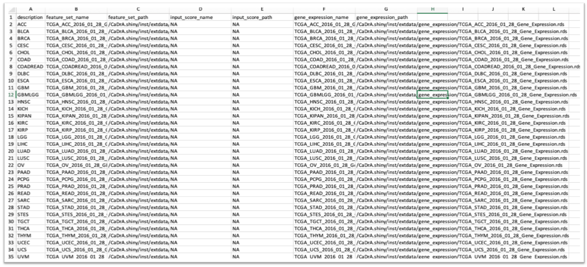

CaDrA.shiny


An R Shiny Dashboard for Interacting with CaDrA Package
Documentation: https://montilab.github.io/CaDrA/
Web Portal: https://cadra.bu.edu/
Overview
CaDrA-shiny is an interactive R Shiny dashboard that is developed to allow users to directly interacting with CaDrA package. CaDrA is an R package that supports a heuristic search framework aimed at identifying candidate drivers of a molecular phenotype of interest (visit our Github repo for more details).
The CaDrA’s shiny dashboard has two distinctive features:
- Run CaDrA search to identify candidate drivers of a molecular phenotype of interest
- Run GSVA to obtain relative enrichment scores for a given gene sets, then subsequently, these scores are used to run CaDrA search to look for complementary features that likely driving the input of molecular phenotype.
Data visualization includes:
- Meta-feature plot
- Kolmogorov Smirnov (KS) enrichment plot
- Top N candidates overlapping heatmap
- Permutation plot
The CaDrA.shiny package is already containerized using Docker and can be deployed on any Cloud-based services.
Docker image: montilab/cadra-shiny
(1) Installation
library(devtools)
devtools::install_github("montilab/CaDrA.shiny")(3) Launch CaDrA’s Shiny App with dataset included in the package
app <- CaDrA.shiny::CaDrA_App(id="myapp")
# NOT RUN: Launch app on localhost with port 3838
# shiny::runApp(app, host='0.0.0.0', port=3838)(4) Launch CaDrA’s Shiny App with your pre-proccessed dataset
Required: a data frame or data file (in csv or rds format) that includes paths to your pre-proccessed dataset with required columns:
- feature_set_name
- feature_set_path
- input_score_name
- input_score_path
- gene_expression_name
- gene_expression_path
Here is an example of mydatafile.csv 
To launch the app:
(6) Launch CaDrA’s Shiny App with dataset downloaded from our web portal using our REST API
(i) Retrieve a list of pre-processed feature sets available on the portal
# API server to get a list of feature sets in the CaDrA Portal
API_Server <- "https://montilab.bu.edu/CaDrA_API/get_feature_set"
# Get a list of feature sets available on CaDrA Portal
fs_list <- CaDrA.shiny::get_feature_set(API_Server, order_by="asc")| description | feature_set_name |
|---|---|
| ACC | TCGA_ACC_2016_01_28_GISTIC_MUT_SIG |
| BLCA | TCGA_BLCA_2016_01_28_GISTIC_MUT_SIG |
| BRCA | TCGA_BRCA_2016_01_28_GISTIC_MUT_SIG |
| CESC | TCGA_CESC_2016_01_28_GISTIC_MUT_SIG |
| CHOL | TCGA_CHOL_2016_01_28_GISTIC_MUT_SIG |
| COADREAD | TCGA_COADREAD_2016_01_28_GISTIC_MUT_SIG |
(ii) Download pre-processed feature sets using our REST API
# Download the feature set along with its input score and gene expression
API_Server <- paste0("https://montilab.bu.edu/CaDrA_API/download_feature_set")
# Define query parameters
feature_sets <- fs_list$feature_set_name[1:2]
include_input_score <- TRUE
include_gene_expression <- TRUE
out_dir <- "~/Github"
# Download feature sets and return a datalist with appropriate paths to its dataset
mydatafile <- CaDrA.shiny::download_feature_sets(
API_Server = API_Server,
feature_sets = feature_sets,
include_input_score = include_input_score,
include_gene_expression = include_gene_expression,
out_dir = out_dir
)| feature_set_name | feature_set_path | input_score_name | input_score_path | gene_expression_name | gene_expression_path |
|---|---|---|---|---|---|
| TCGA_ACC_2016_01_28_GISTIC_MUT_SIG | ~/Github/download-fs-2023-06-26/TCGA_ACC_2016_01_28_GISTIC_MUT_SIG/feature_set/TCGA_ACC_2016_01_28_GISTIC_MUT_SIG.rds | NA | ~/Github/download-fs-2023-06-26/TCGA_ACC_2016_01_28_GISTIC_MUT_SIG/input_score/NA | TCGA_ACC_2016_01_28_Gene_Expression | ~/Github/download-fs-2023-06-26/TCGA_ACC_2016_01_28_GISTIC_MUT_SIG/gene_expression/TCGA_ACC_2016_01_28_Gene_Expression.rds |
| TCGA_ACC_2016_01_28_GISTIC_MUT_SIG | ~/Github/download-fs-2023-06-26/TCGA_ACC_2016_01_28_GISTIC_MUT_SIG/feature_set/TCGA_ACC_2016_01_28_GISTIC_MUT_SIG.rds | HALLMARK_TNFA_SIGNALING_VIA_NFKB | ~/Github/download-fs-2023-06-26/TCGA_ACC_2016_01_28_GISTIC_MUT_SIG/input_score/HALLMARK_TNFA_SIGNALING_VIA_NFKB.rds | TCGA_ACC_2016_01_28_Gene_Expression | ~/Github/download-fs-2023-06-26/TCGA_ACC_2016_01_28_GISTIC_MUT_SIG/gene_expression/TCGA_ACC_2016_01_28_Gene_Expression.rds |
| TCGA_ACC_2016_01_28_GISTIC_MUT_SIG | ~/Github/download-fs-2023-06-26/TCGA_ACC_2016_01_28_GISTIC_MUT_SIG/feature_set/TCGA_ACC_2016_01_28_GISTIC_MUT_SIG.rds | HALLMARK_HYPOXIA | ~/Github/download-fs-2023-06-26/TCGA_ACC_2016_01_28_GISTIC_MUT_SIG/input_score/HALLMARK_HYPOXIA.rds | TCGA_ACC_2016_01_28_Gene_Expression | ~/Github/download-fs-2023-06-26/TCGA_ACC_2016_01_28_GISTIC_MUT_SIG/gene_expression/TCGA_ACC_2016_01_28_Gene_Expression.rds |
| TCGA_ACC_2016_01_28_GISTIC_MUT_SIG | ~/Github/download-fs-2023-06-26/TCGA_ACC_2016_01_28_GISTIC_MUT_SIG/feature_set/TCGA_ACC_2016_01_28_GISTIC_MUT_SIG.rds | HALLMARK_CHOLESTEROL_HOMEOSTASIS | ~/Github/download-fs-2023-06-26/TCGA_ACC_2016_01_28_GISTIC_MUT_SIG/input_score/HALLMARK_CHOLESTEROL_HOMEOSTASIS.rds | TCGA_ACC_2016_01_28_Gene_Expression | ~/Github/download-fs-2023-06-26/TCGA_ACC_2016_01_28_GISTIC_MUT_SIG/gene_expression/TCGA_ACC_2016_01_28_Gene_Expression.rds |
| TCGA_ACC_2016_01_28_GISTIC_MUT_SIG | ~/Github/download-fs-2023-06-26/TCGA_ACC_2016_01_28_GISTIC_MUT_SIG/feature_set/TCGA_ACC_2016_01_28_GISTIC_MUT_SIG.rds | HALLMARK_MITOTIC_SPINDLE | ~/Github/download-fs-2023-06-26/TCGA_ACC_2016_01_28_GISTIC_MUT_SIG/input_score/HALLMARK_MITOTIC_SPINDLE.rds | TCGA_ACC_2016_01_28_Gene_Expression | ~/Github/download-fs-2023-06-26/TCGA_ACC_2016_01_28_GISTIC_MUT_SIG/gene_expression/TCGA_ACC_2016_01_28_Gene_Expression.rds |
| TCGA_ACC_2016_01_28_GISTIC_MUT_SIG | ~/Github/download-fs-2023-06-26/TCGA_ACC_2016_01_28_GISTIC_MUT_SIG/feature_set/TCGA_ACC_2016_01_28_GISTIC_MUT_SIG.rds | HALLMARK_WNT_BETA_CATENIN_SIGNALING | ~/Github/download-fs-2023-06-26/TCGA_ACC_2016_01_28_GISTIC_MUT_SIG/input_score/HALLMARK_WNT_BETA_CATENIN_SIGNALING.rds | TCGA_ACC_2016_01_28_Gene_Expression | ~/Github/download-fs-2023-06-26/TCGA_ACC_2016_01_28_GISTIC_MUT_SIG/gene_expression/TCGA_ACC_2016_01_28_Gene_Expression.rds |
(iii) Launch CaDrA’s app with the downloaded dataset
# Launch CaDrA's Shiny app with your downloaded datalist
app <- CaDrA.shiny::CaDrA_App(id="myapp", datalist=mydatafile)
# NOT RUN: Launch app on localhost with port 3838
# shiny::runApp(app, host='0.0.0.0', port=3838)There are five tabs on CaDrA’s Dashboard. Explore each tab and see what they do:

Getting Help
To get help with CaDrA, visit our Github dicussion or Github issues.
To get help with CaDrA.shiny, visit our Github dicussion or Github issues.